喜歡的是設計，不是做成這樣
做一個寵物美容店的預約網站。我很喜歡這個網站的設計。
使用者附上本機網址。專案只有後端 API，沒有介面、品牌或設計系統，所以進入模式是主題起手。
這個來源判成參考網站，不是目標稿。依據是使用者說的是「很喜歡設計」，不是「做成這樣」，而且它是花藝工作室，不是寵物美容店。能借的是設計屬性，不是版面、文案或品牌，所以不做可行性審查，接下來要決定的是借哪些特質。

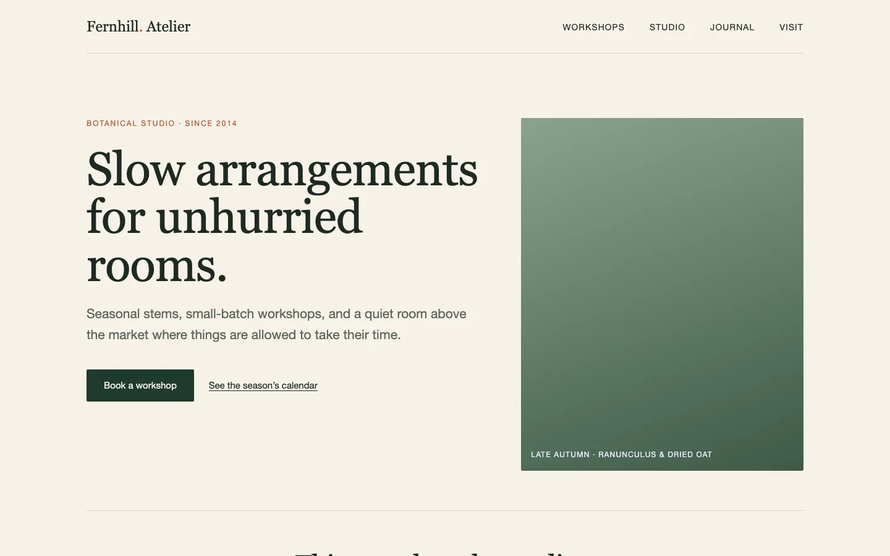
拆成八個屬性
每個屬性附截圖區域、從畫面量到的值、技能的建議與理由，使用者逐項標「要、不要、無所謂」。下表是 a1 到 a8；使用者的標記大致照建議，只有 a3 加了條件。
技能先講清楚兩件事。第一，R1 的程式碼宣告了商用字體 GT Super Display 與 Söhne，但這兩套字在畫面上都沒有載入，實際看到的是 Georgia 與 Helvetica Neue，屬性表描述的是看得到的樣子，宣告值另外列。第二，R1 在 390 寬沒有手機版，整頁被撐到 1018px 寬、會往旁邊捲，所以它的「手機樣子」不能借，使用者喜歡的應該是桌機上的特質。
| 屬性 | 量到的值 | 技能建議 | 使用者標記 |
|---|---|---|---|
| a1 字體性格與字級 | 襯線大標題配無襯線內文，標題 76／43／24px；共 9 種字級 | 要：收斂成 5 級以內，中文標題改配宋體類字面 | 要 |
| a2 間距節奏 | 8／16／24／40／64／104px，段落間留大片空白 | 要：手機上按比例縮小 | 要 |
| a3 配色結構 | 米白底、深色實心主按鈕、一個點綴色；文字對底 13.25:1 | 要：色相重選，不沿用它的綠配赭紅 | 要，但主色想換暖 |
| a4 圖像處理 | 4:5 直幅大圖加疊字說明；說明字對底 2.37:1 | 不要：店家沒有照片，說明字對比也不及格 | 不要（沒說替代） |
| a5 版面節奏 | 兩位數編號加左窄右寬兩欄，細線分段，清單三欄並排 | 要：適合有順序的預約內容 | 要 |
| a6 表面與線條 | 無陰影、圓角 2px、1px 細線；分隔線對底 1.37:1 | 要：表單欄位框要另外加深到 3:1 | 要 |
| a7 主次動作 | 一顆深色實心主按鈕，旁邊是底線文字連結 | 要：讓「線上預約」領頭 | 要 |
| a8 文案語氣 | 英文、慢、帶詩意 | 不要：預約網站要一眼看懂價格、時長與下一步 | 不要 |

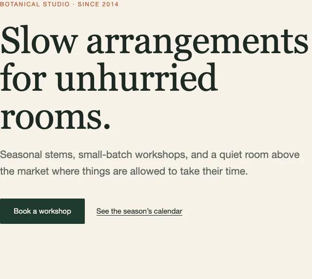

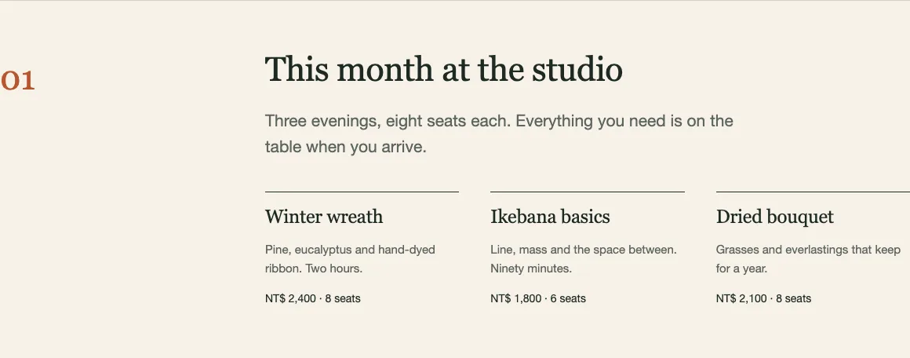
R1 自己有三處沒達標：12px 眉標對底 4.23:1、照片說明 2.37:1、只靠分隔線區分的欄位邊界。這三處都沒有借過來。清單裡的「8 seats」暗示剩餘名額，但 API 只有某日可預約時段、沒有名額數，所以借清單樣式時這部分不會跟過來。

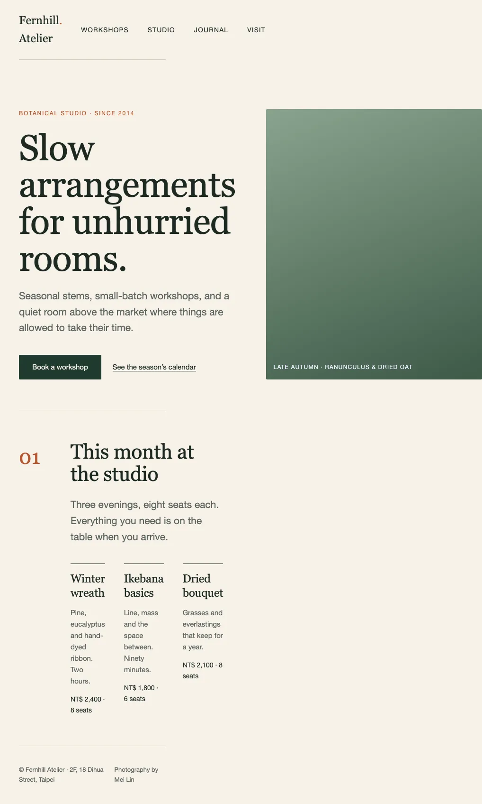
訪談一併問了其他題。使用者回答的有：讀者是附近的飼主、主要行動是線上預約；只做繁中、淺色、手機優先；氣質形容詞「從容、細緻、溫和」，要避開「高冷、距離感」。技能是從建議要借的屬性推出這三個詞，並指出 R1 有點精品店的距離感，寵物美容要讓人覺得親近。
店名與 logo、價格要不要直接露出、文案語氣、本輪範圍這四題使用者沒有回，技能先照建議當成假設，紀錄成可以之後改：店名先標「（店名待定）」、服務清單直接列價格與時長、文案親切直白、只做預約主流程。a4 標了不要卻沒說替代，三個處理就都不放照片，首屏右側改放「預約只要三步」。
三個處理，差在採用程度
三個視覺處理用同一個暫定版面、同一批示例資料與狀態，只差視覺語言，每個都和 R1 同寬並排。這個版面只用來放樣式，不是結構提案。主色三個都換成暖色。
技能推薦 2：保留襯線標題、編號與細線，價目列在手機上能一次掃完價格與時長，代價是比 R1 少一點雜誌感。最在意 R1 氣氛的人該選 1；3 最親切，但「細緻」最弱。
選 2。
使用者沒說原因，紀錄寫「未陳述」。
| 處理 | 概念 | 採用 R1 的程度 | 主色 |
|---|---|---|---|
| 1 靜謐目錄 | 大襯線標題、寬留白、編號章節、三欄細線清單 | 貼近：字級比例 1.75 與 R1 相同，間距照 R1 的 8 到 104px，2px 圓角 | 深栗 #6b2d1a |
| 2 溫暖手帖 | 保留襯線標題與編號，字級收斂，服務改成一眼掃完的價目列 | 轉化：比例降到 1.4，間距收一階，6px 圓角，點綴改成淺杏色底塊 | 赤陶棕 #8a3a1e |
| 3 街角小店 | 全部用無襯線，緊湊卡片加圖示 | 輕度取材：只借三角色配色結構和主次動作 | 橘陶 #a63f19 |

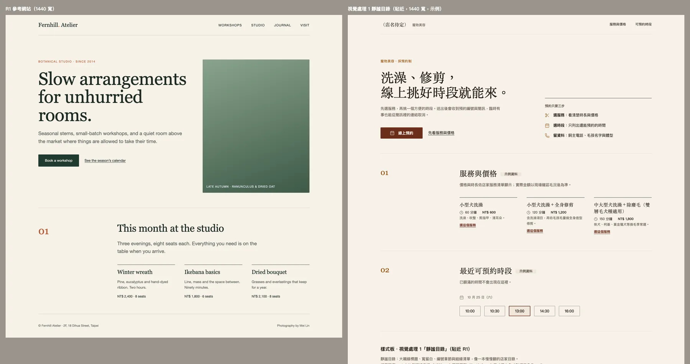

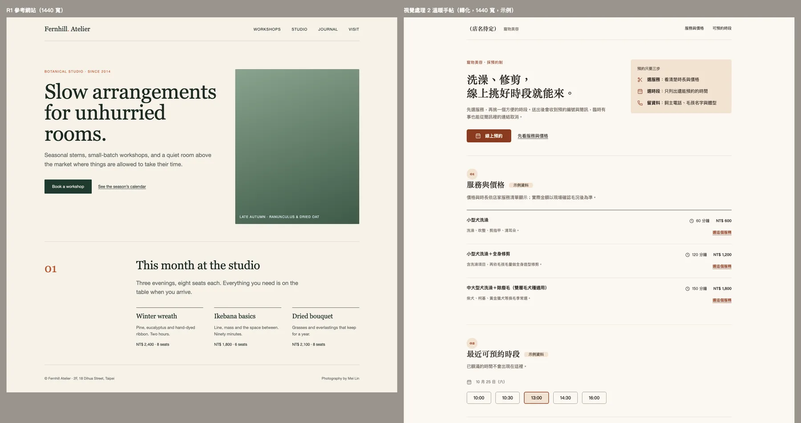

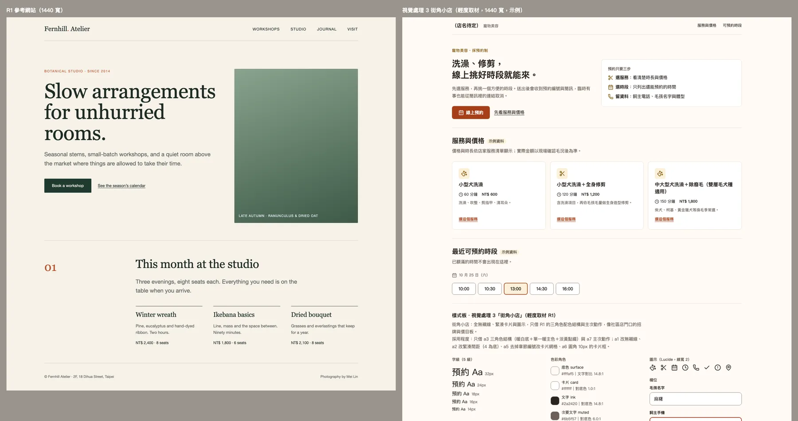
技能比對已安裝的視覺方向技能，選了 minimalist-ui 當主要技能，並照做不用 Inter、深炭色文字、無漸層與厚陰影、主按鈕不做膠囊形。沒照做的三處也寫出來：它要求 Phosphor 圖示，但這台電腦沒有，探索階段又不能加套件或連網，所以用 Lucide 並附授權；它建議放線上佔位照片，與「不要照片」和離線單檔衝突；它要求捲動進場動畫，這一輪是靜態截圖比較，動效留到之後。按鈕圓角它主張 4 到 6px，處理 1 依使用者 a6 的「要」用 2px。impeccable 與 design-taste-frontend 也看過，因為會下載執行檔、重選視覺世界或需要網路，與「借屬性」不合。
看截圖時修了兩處：處理 2 的服務列最後一項與下一段的分隔線疊成雙線，處理 3 的「選這個服務」被置中、沒和卡片內文對齊。
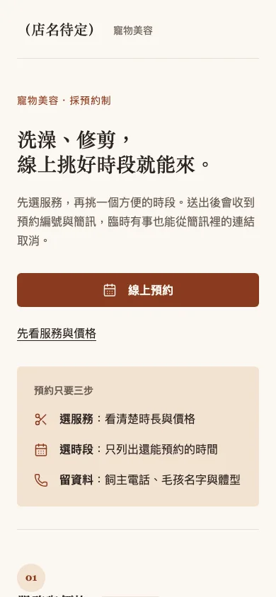
再比結構
三個結構都套處理 2、用同一份示例服務與時段，差在入口與先後順序，不只是換色。
B 的缺口是把設計畫出來之後才看出的：API 還缺什麼。技能推薦 C，因為先選服務就知道時長，再挑時段，不會踩到 B 的缺口。
C。
| 方向 | 概念 | 代價 |
|---|---|---|
| A 店面首頁 | 先像一間店：首屏介紹、服務價目列，每列有「預約這項」 | 手機上要捲過介紹才碰到預約；地址、營業時間、電話 API 沒有，要店家另外提供 |
| B 時段優先 | 一打開就是日期列與可預約時段，先搶時間再選服務 | 資料契約有缺口：GET /slots 只回傳時段，不知道一個時段放不放得下 150 分鐘的服務 |
| C 逐步預約 | 三步流程：選服務、選時段、留資料，底部固定顯示金額與「下一步」 | 品牌氣氛壓到最小；首頁介紹要另外設計 |

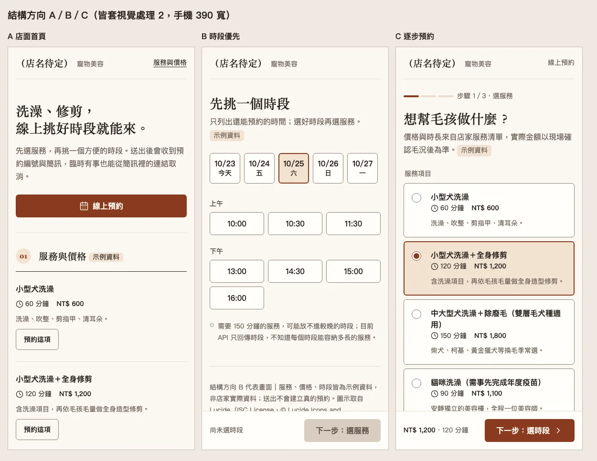
整頁截圖裡，B 與 C 底部固定的操作列會蓋住頁尾，這是整頁截圖處理固定元素的方式造成的，手機上的樣子要看首屏截圖。
原型只回答一個問題
附近的飼主用手機，能不能不迷路地走完「選服務、選時段、留資料、拿到預約編號」；遇到當天沒時段、時段被搶走、網路中斷、欄位填錯時，能不能自己找到回頭的路，而且不用重填？
這是原型最前面寫的問題。原型是一個離線 HTML，頁面最下方有虛線框的「原型控制」用來切換這些情境，不屬於設計。檢查時發現並修好七處：
- 載入時段會把整個畫面重畫，焦點因此掉了。
- 預約編號把日期寫死成 1025，選 10/28 也照樣顯示。
- 手機上時段被訂走退回步驟 2 時，選中的 10/28 被擠到日期列外面看不到。
- 網路中斷的提示出現在頁面頂端，但手機視窗停在底部，使用者看不到。
- 完成頁的預約編號用 Georgia，變成高低不齊的舊式數字。
- 完成後桌機側欄的「飼主與毛孩」還寫著「最後填寫」。
- 網路中斷時頁面上有兩個相同 id 的按鈕。

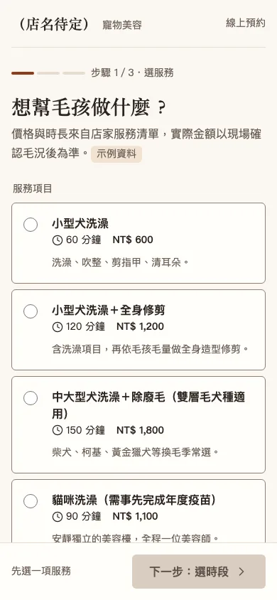

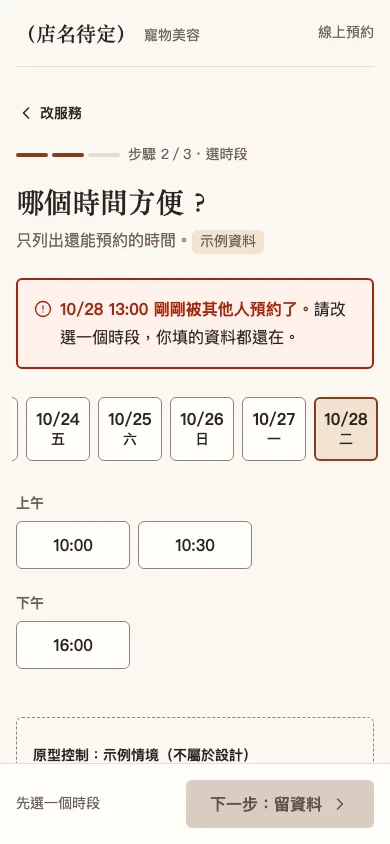

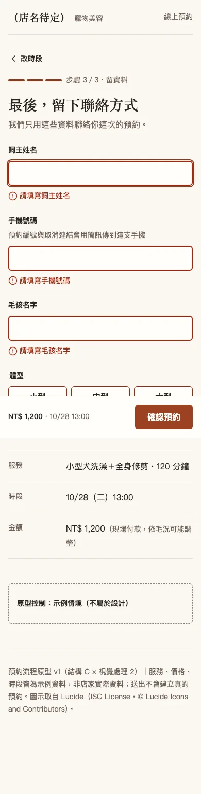
上一輪請使用者分開回答「喜歡哪裡」與「做預約時哪裡卡住」，使用者直接回了：
定稿。
兩題都沒有回答，SESSION 記為未回答。定稿的是結構 C 加視覺處理 2，生產實作沒有授權，設計停在交接。
交接要接手的人先處理兩個契約問題，它們決定步驟 2 與恢復路徑的做法：GET /slots 要不要依服務時長過濾，以及 POST /bookings 時段已被訂走時的錯誤碼與格式。另有三件事原型裡是假設：體型分級界線、簡訊是不是由建立預約觸發、預約編號格式。交接附 7 條驗收情境；取消頁、網站首頁、店名與 logo 還沒做。

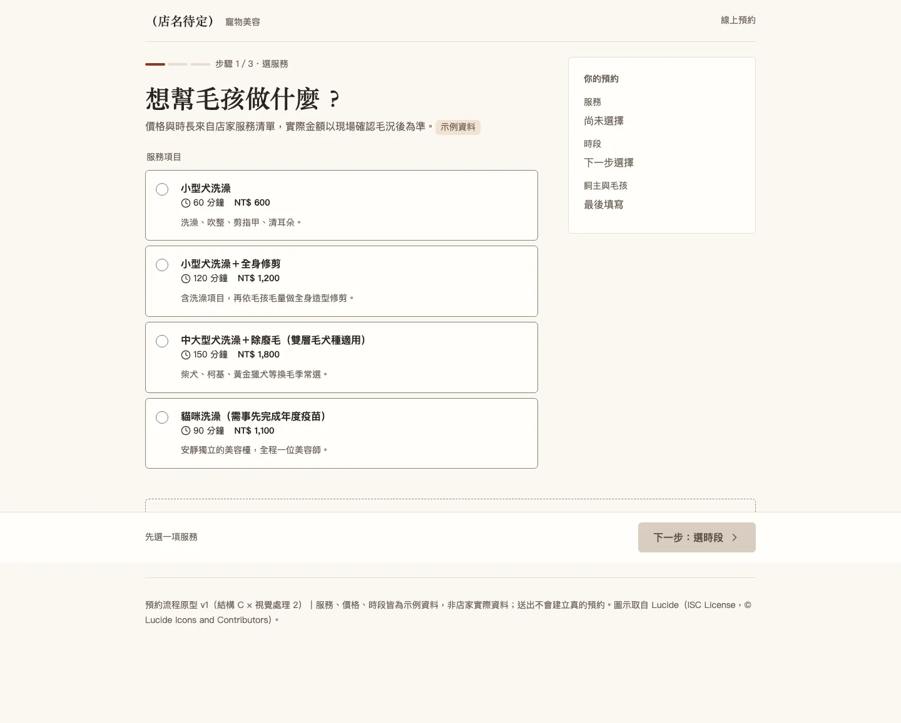
驗證到哪裡
用 Playwright 1.64.1（Chromium headless，macOS）開啟原型、截圖並跑程式化檢查。下面摘自 SESSION 的驗證段落。
做過的檢查
- 定稿原型 57 項斷言，在 390 與 1440 寬全部通過：主要路徑，加上無時段、時段載入失敗、時段被訂走、網路中斷、欄位錯誤這些恢復路徑。
- 處理與方向在 1440 與 390 寬全頁截圖、逐張檢視，沒有橫向捲動；原型各步驟與狀態在 390 寬截圖並逐張看過。
- 鍵盤：Tab 走到服務選項、有可見焦點框、Enter 進下一步，換步驟時焦點移到新標題。
- 品味基線：字級 40／28／20／16／14；文字對底 5.8:1 以上，錯誤紅對底 7.0:1，欄位框 3.6 到 3.8:1，錯誤訊息都同時用圖示與文字。
沒有做的檢查
- 真人試用。使用者沒有回答喜歡哪裡、哪裡卡住，所以這些斷言不是易用性證據；使用者定稿不能取代操作證據。
- 實體手機；390 寬是桌機 Chromium 模擬的。
- 螢幕報讀軟體實際聽過；文字放大到 200%。
- 三個處理階段的焦點狀態：樣式寫了
:focus-visible，但那一輪截圖沒有拍到，留到原型階段用鍵盤實測。
打開原型
單檔離線 HTML，原樣複製自試跑產物。表單只在頁面內驗證，送出是模擬，不會建立預約或寄出簡訊。原本的處理比較頁把 R1 放在需要本機伺服器的左欄，所以這裡改成單獨列出三個處理。